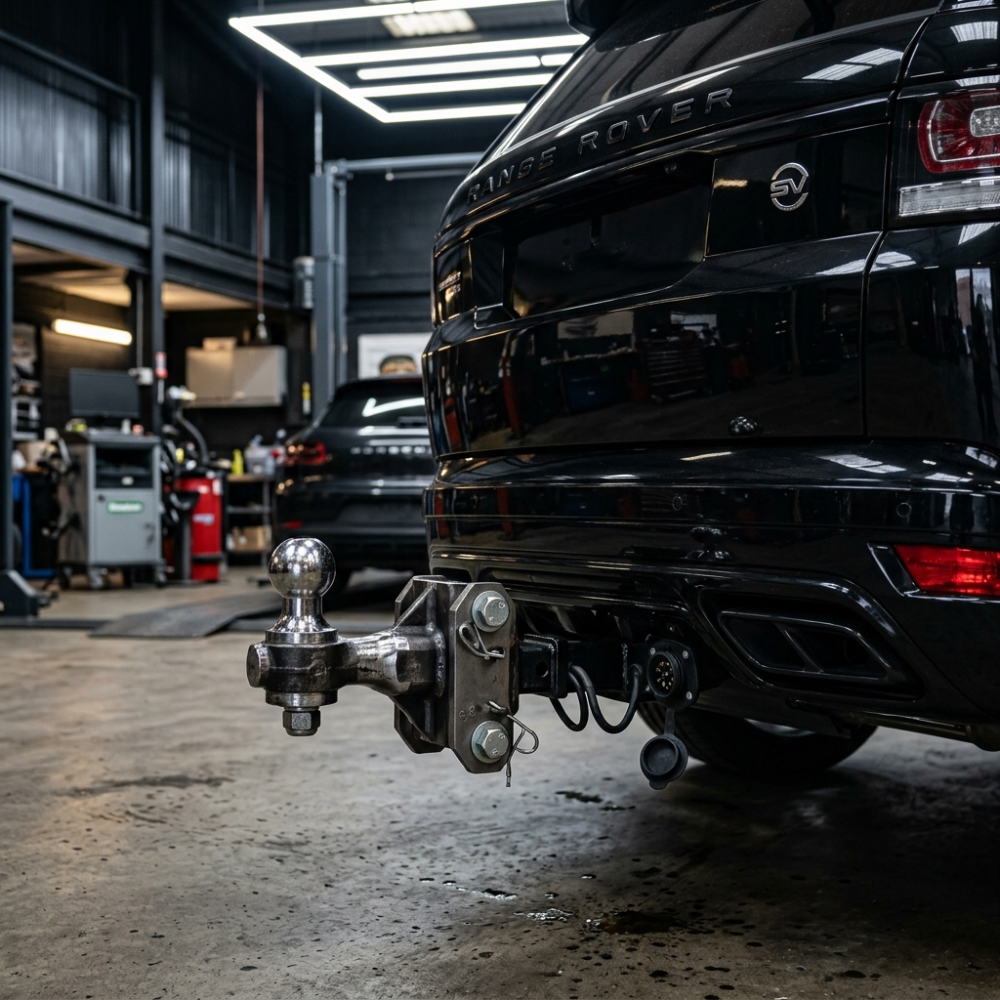
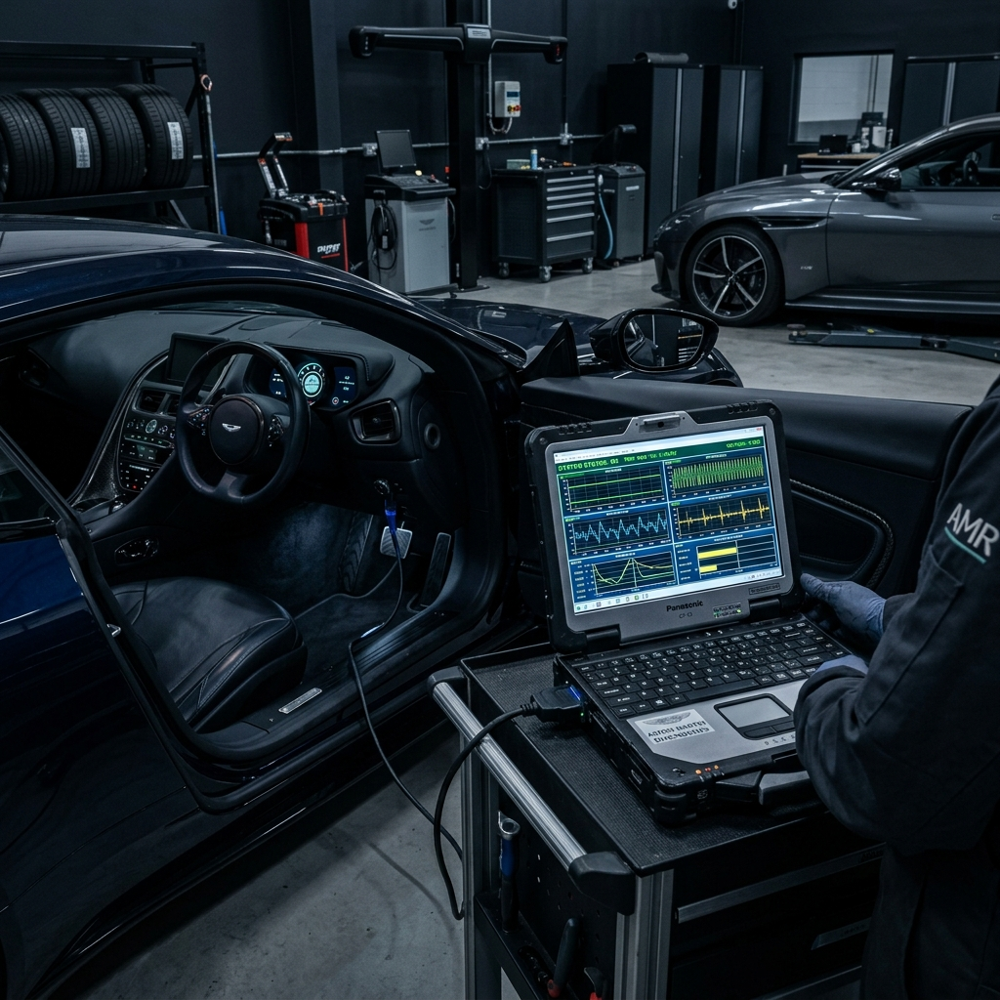
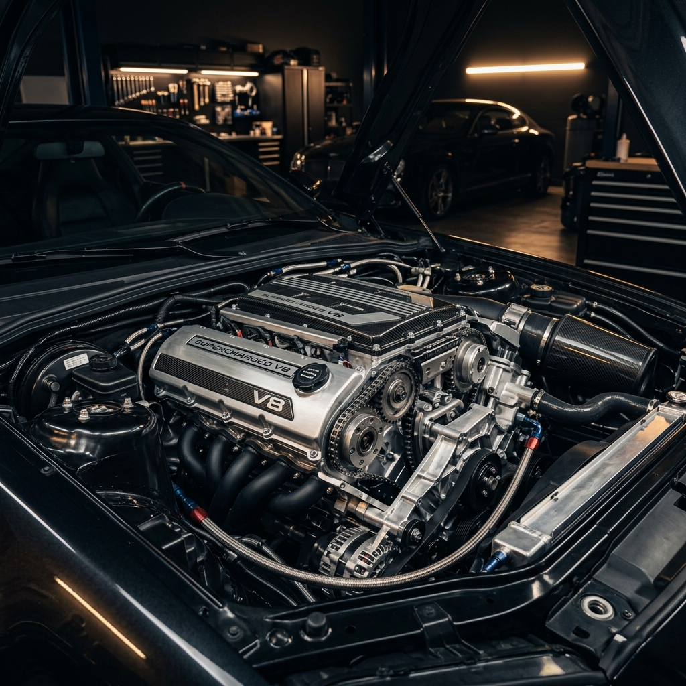
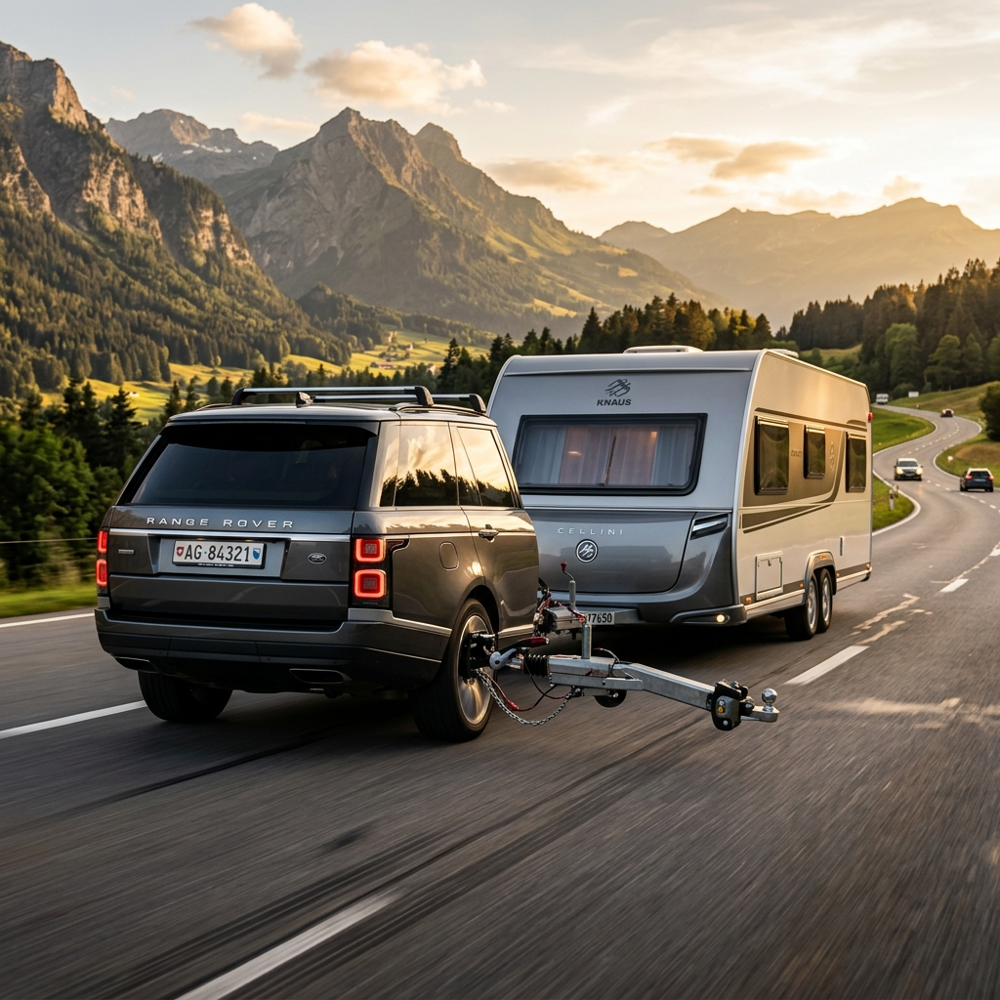
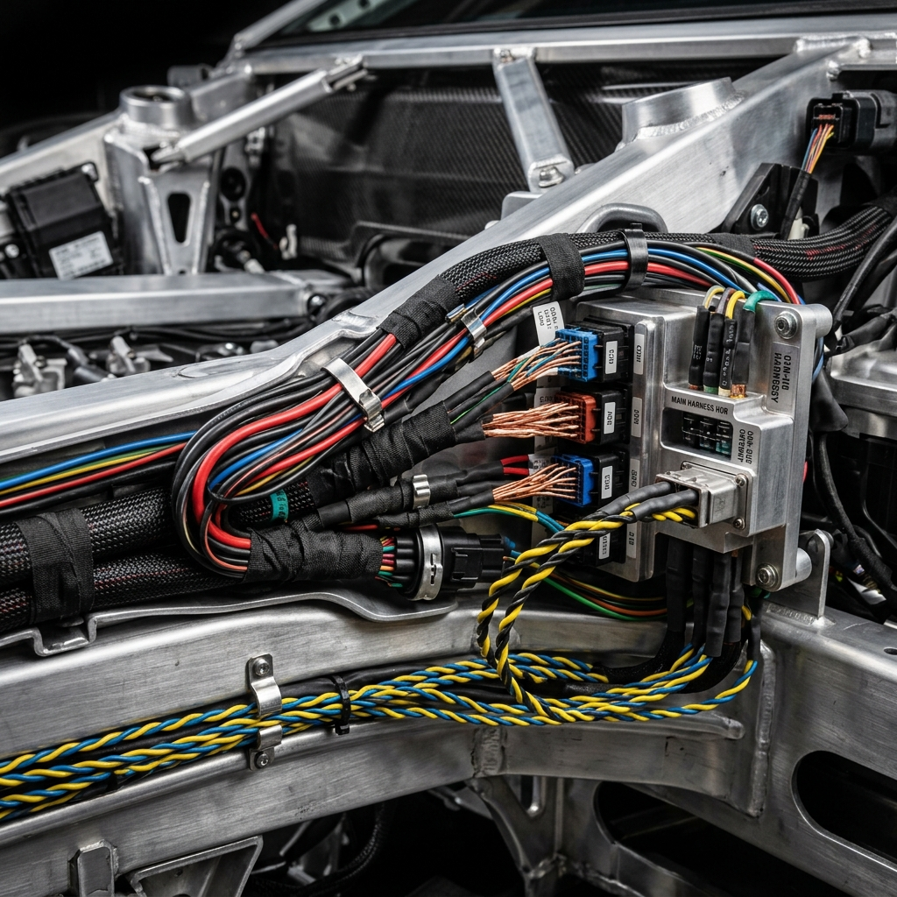
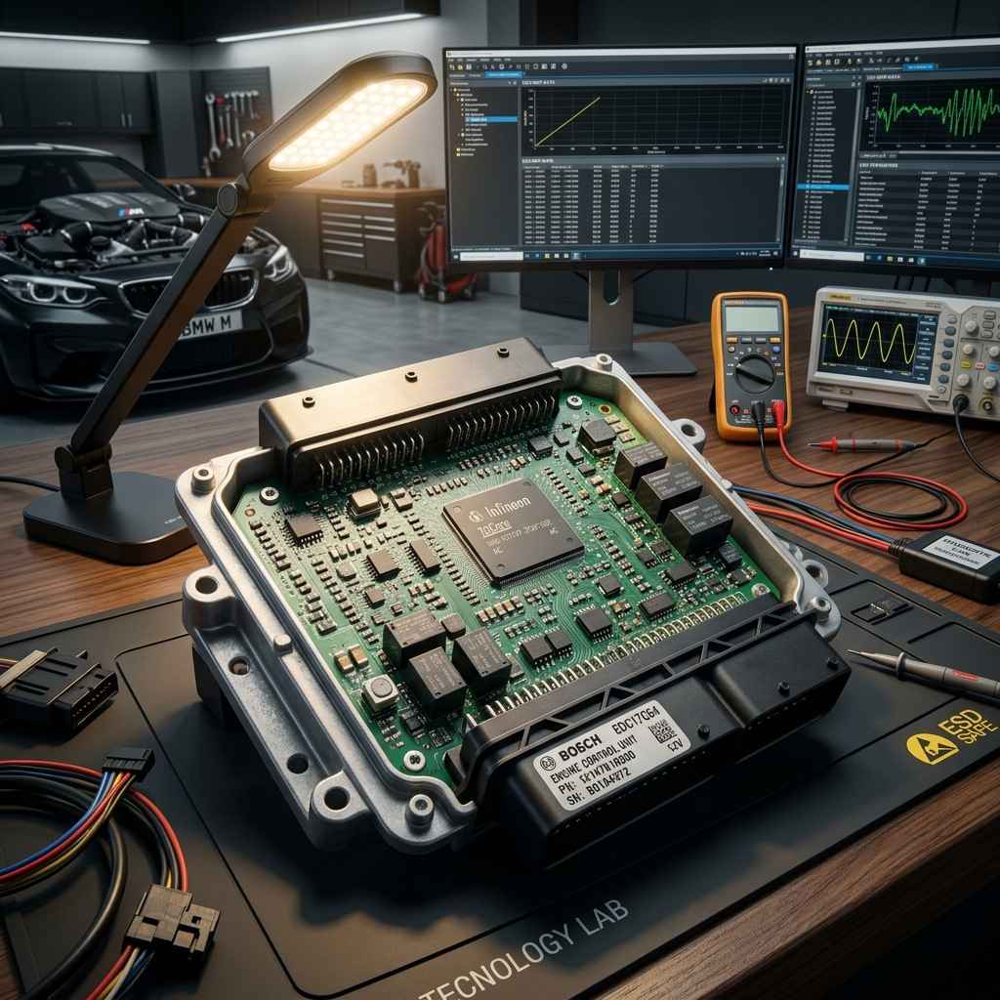
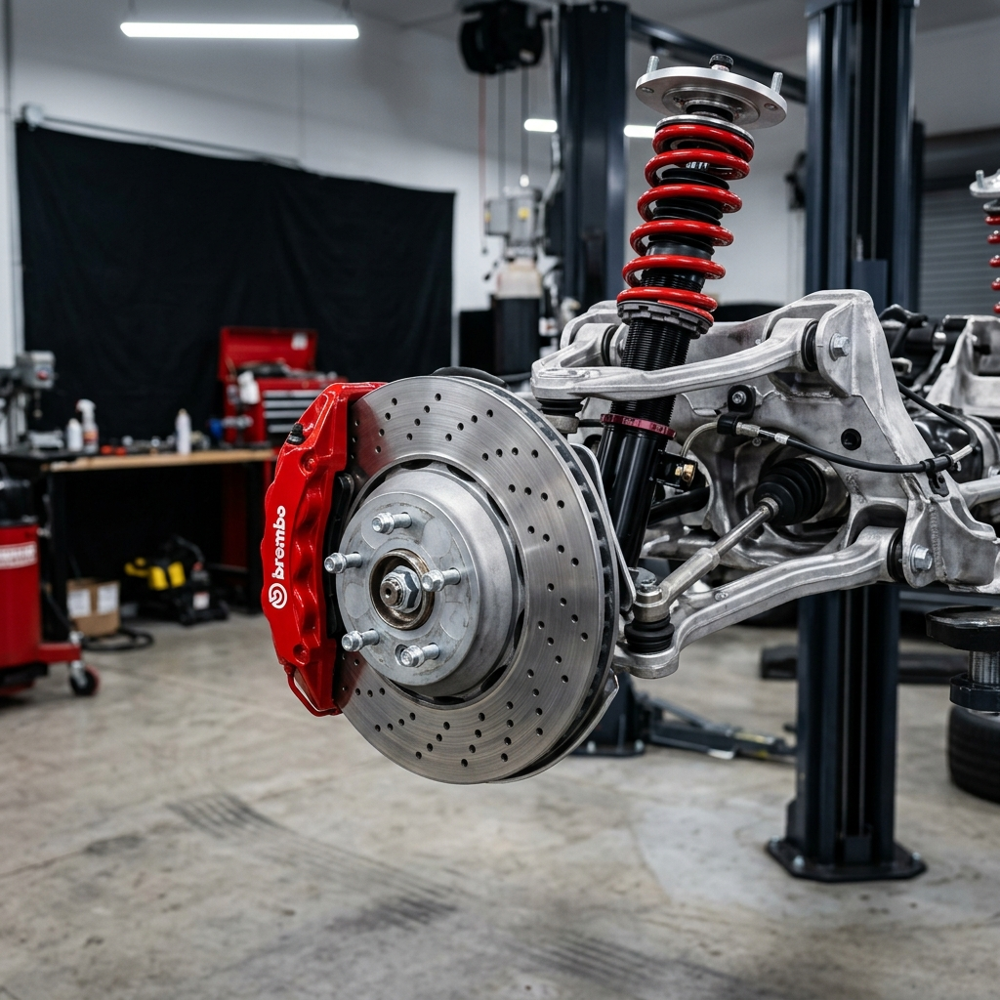

Deneme-yanılma yok. Renault, Dacia, Peugeot ve Honda modellerine fabrika analisti zekasıyla yaklaşıyor; %100 TSE Onaylı ithal çeki demirleri projelendiriyoruz.
Oyak Renault & Honda Kıdemi
Onaylı Proje & Evrak Teslimi
Google Haritalar Güven Skoru
Aracınızın markasını ve yaptırmak istediğiniz işlemi seçin; sistem Yaşar Usta'ya iletilecek özel WhatsApp fiyat sorgulamanızı hazırlasın.
Bursa Nilüfer'deki stüdyomuzdan çeki demiri montajları, bilgisayarlı arıza tahlili ve kusursuz periyodik bakım kareleri.




Her civatasına ve sinyal ağına kadar vakıf olduğumuz marka aileleri.
Atölyemizde bire bir uyguladığımız somut teknik çözümler:
Motor sıvı değişimleri, triger kiti, şanzıman revizyonları ve ağır yürüyen aksam bakımları orijinal yedek parça nizamıyla yapılır.
Güncel diagnostik cihazlarımızla aracınızın beyin ve sensör ağlarındaki gizli arızalar sıfır yanılma payıyla anında saptanır.
Karavan ve römorklarınız için aracınızın şasisine uyumlu ithal kancaları %100 TSE Mühendislik Projesi ve evrağıyla monte ediyoruz.

Oyak Renault uzmanlığıyla; yıpranmış veya kısa devreli CAN-Bus kablo ağlarını orijinal kablo kanallarında yangın korumalı yeniliyoruz.

Elektronik kartlar, şarj-marş sistemleri, aydınlatma modülleri ve beyin arası iletişim sorunlarında hassas ölçüm ve kesin onarım.

Sürüş konforunuz ve güvenliğiniz için ön takım rot elemanları, amortisörler ve fren disk/balata değişimlerini kusursuz hıza alıyoruz.
En büyük servetimiz, atölyemizden anahtarını huzurla teslim alan araç sahipleridir.
"Bursa Sanayi'de 3 servis dolaştım, Renault Talisman'ımdaki gizli elektrik kazağını bulamadılar. Oyak Renault emeklisi Yaşar Usta diagnostik tecrübesiyle yarım saatte çözdü. Harika nezaket."
"Karavanım için ORIS marka TSE onaylı çeki demiri taktırdım. Akıllı CAN-Bus tesisatını Metin Usta o kadar nizamlı çekti ki araç garanti bozmadı. Proje evrağıyla TÜV Türk'ten teklemeden geçtik."
"Honda İnallar kıdemlisi Nedim Usta için gittim. Motor alt takım revizyonunu tam fabrikasyon özenle tamamladılar. Kahvelerini içtik, tertemiz anahtarı aldık. Bursa'nın gururu."
Aracınıza yapılacak müdahaleler ve resmi çeki demiri prosedürleri hakkında şeffaf bilgiler:
Hayır, bozmaz. Atölyemizde kablolar kesilerek değil; doğrudan aracın elektronik beyniyle haberleşen lisanslı CAN-Bus Akıllı Akım Modülleri ile uygulanır. Aracınızın garantisi %100 güvende kalır.
Biz resmi lisanslı yetki merkeziyiz. Montajı tamamlanan kancalarınız için makina mühendislerimiz tarafından onaylı %100 TSE Proje Evrağı elinize teslim edilir. Bu belgeyle doğrudan TÜV Türk tadilat muayenesine giderek ruhsatınıza işletirsiniz.
Kurucularımız Yaşar Kocaman ve Metin Yüce, Oyak Renault fabrikasında 30 yıl kalite ve diagnostik analisti olarak çalışmıştır. Mekanik ustamız Nedim Söztutar ise 30 yıl Honda İnallar servislerinde motor şefi olarak görev yapmıştır. Arızayı 'deneme-yanılma' ile değil, analitik kurmay zekâ ile çözeriz.
Sizleri stüdyomuzda nezaketle karşılamak ve aracınıza hak ettiği zamanı ayırabilmek adına, web sitemizdeki Akıllı Teklif Robotundan veya telefon numaramızdan ön randevu almanız en verimli deneyimi sağlayacaktır.
Arızayı deneme-yanılma ile değil, otomobillerin üretim dilini dev fabrikalarda yazmış olan gerçek ustalıkla çözelim.
Kıdemli Araç Analisti & Kurucu
Fabrikada binlerce otomobilin üretim kalite denetimlerini ve derin diagnostik arıza analizlerini yönetmiş 30 yıllık kurmay hafıza.
Doğrudan Hat: 0532 453 10 82Elektromekanik & Tesisat Uzmanı
Kablo tesisat tadilatları, akıllı beyin devreleri ve CAN-Bus sinyal iletişim ağlarında sıfır hata toleransı.
Doğrudan Hat: 0532 777 59 1130 Yıllık Kıdemli Mekanik Usta
Honda İnallar ve Şançelik servislerindeki 30 yıllık tecrübesiyle motor rektifiyesi, ağır bakım ve mekanik onarım ustası.
Atölye Sabit: 0224 441 97 66